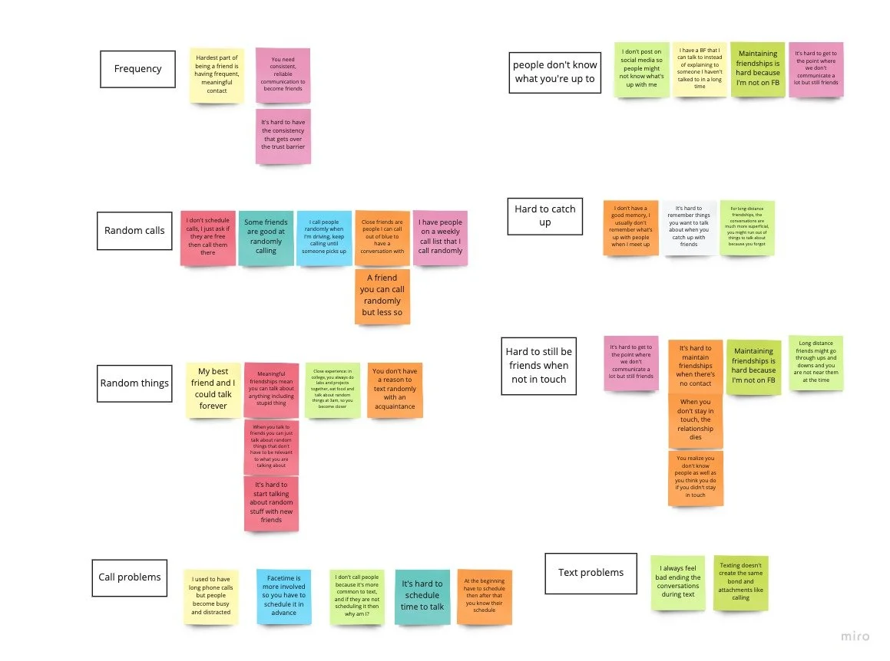
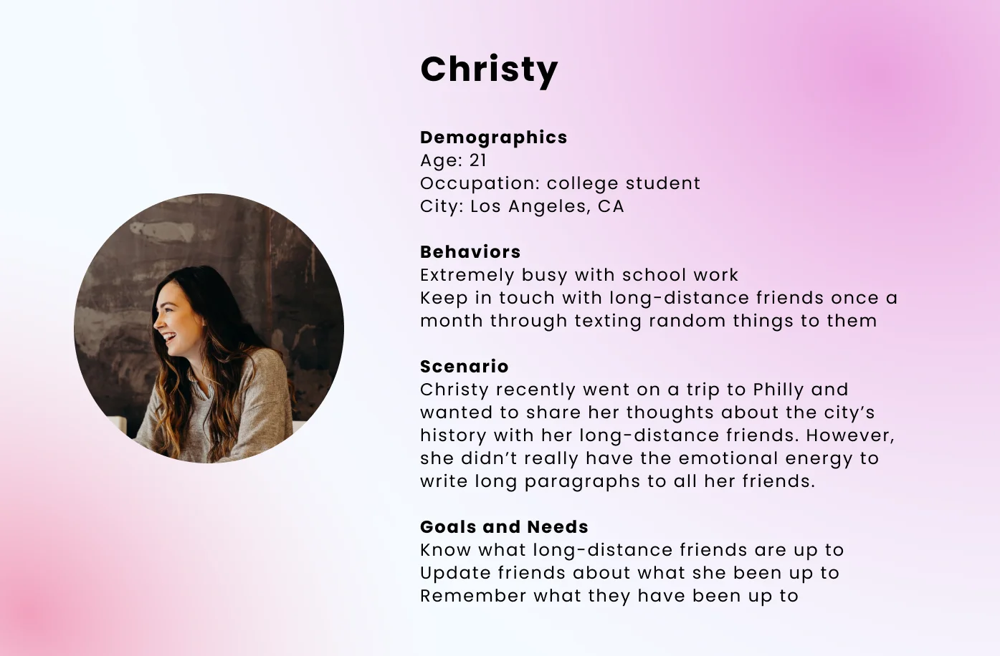
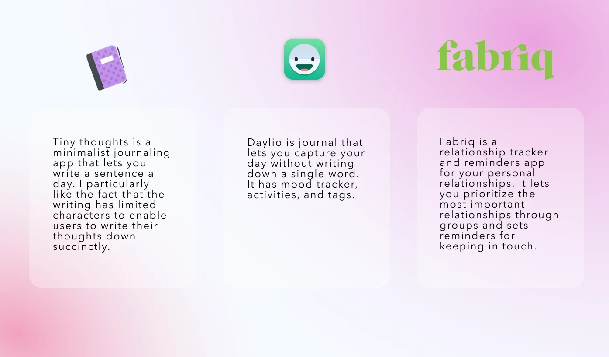
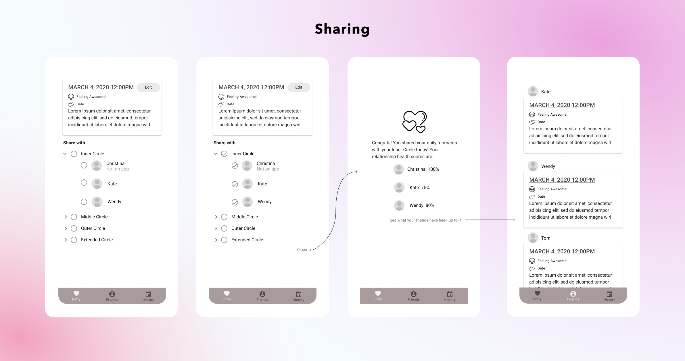
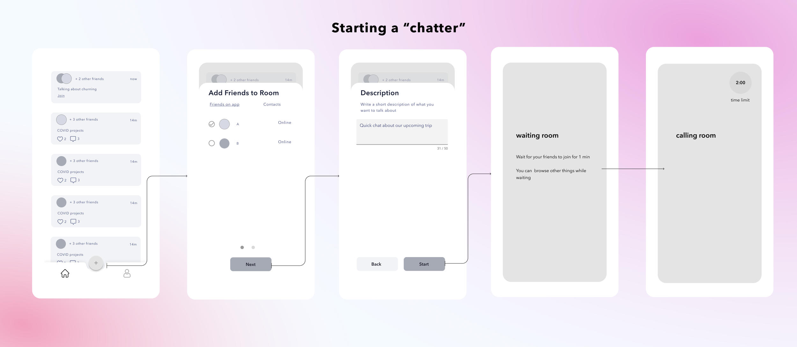
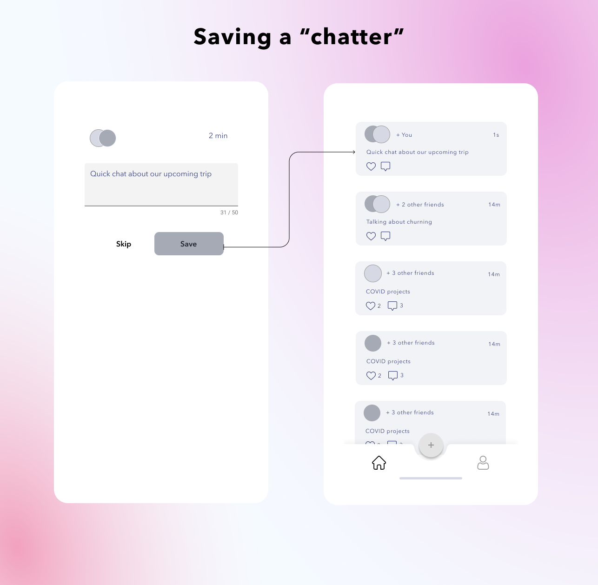
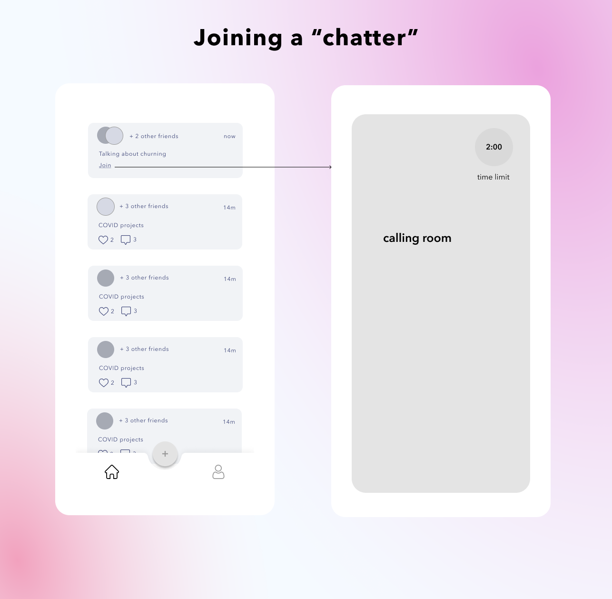

Chatter — catch-ups without the calendar
A mobile app for spontaneous, time-limited video chats with friends: no disruptive cold calls, no scheduling logistics. Invite friends to a two-minute room, save the moment to your feed, and drop into theirs.

Mid-pandemic, keeping friendships alive meant Zoom fatigue and calendar Tetris — and I wasn't the only one drowning. Chatter came from a simple reframe: young adults need a way to keep in touch with long-distance friends that doesn't run on endless texting or scheduled calls.
I wrote a research plan around how young adults actually keep in touch — and what they love or resent about it — then ran 30-minute interviews with 8 people. Affinity-mapping the interviews surfaced two core insights:

The insights condensed into Christy: a busy student who wants to know what her long-distance friends are up to — and to tell them hers — without the emotional energy of writing long paragraphs to everyone.

“How might we redesign texting and calling to fit long-distance friendships?” THE HMW BEHIND BOTH IDEAS
MICRO-JOURNALS
First swing: texting + journaling in one. A semi-private journal shared with chosen friend groups — one update reaches everyone, nobody owes a reply, and friends stay in the loop passively. I studied journaling and relationship-tracker apps (Tiny Thoughts, Daylio, Fabriq), then wireframed activity tracking, character-limited entries, group sharing, and a relationship score nudging you toward neglected friends.



Feedback on the Figma Mirror walkthrough was warm but lukewarm — people liked low-effort micro-journals, but two comments kept repeating:
Re-reading my interviews, the answer was already there: people prefer calling because it's higher-fidelity and lower-effort. I was building a better way to text when I should have been removing the friction from calls. So I pivoted.
LOW-PRESSURE CALLS
The second concept makes spontaneous calls easy to make and easy to receive, drawing on social apps that make video calling fun:
- Start a chatter — open a room with a topic description and a 2-minute limit, so friends know what it's about and can afford to pick up
- Save a chatter — post the call's metadata (never the recording) to your feed as a shared memory
- Join a chatter — hop into a friend's ongoing room straight from the feed
- Receive a chatter — answer now, or skip and join later when you're free





This time the reaction flipped — people saw themselves actually using it. The one consistent complaint, a forced default time limit, became a user-set limit in the hi-fi iteration.
The lesson that stuck: iteration is the job. Lukewarm feedback on idea one wasn't failure, it was data — stepping back and re-reading the research produced a far better answer. Weeks after I finished, Clubhouse launched and drop-in audio rooms took off: real-world validation for the core mechanic, even if they aimed it at the public square instead of friendships.
With more time I'd run usability tests on the hi-fi prototype and design proper onboarding, so the app's functions introduce themselves as clearly in the product as they do on this page.
Lukewarm feedback is a gift — it sent me back to the research, and the second idea was the one people wanted to use.